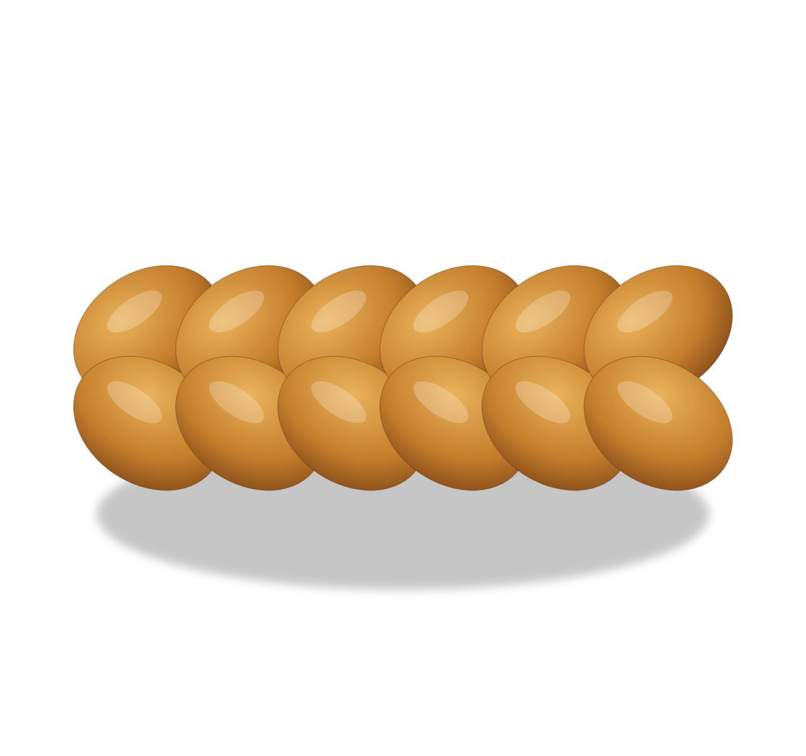
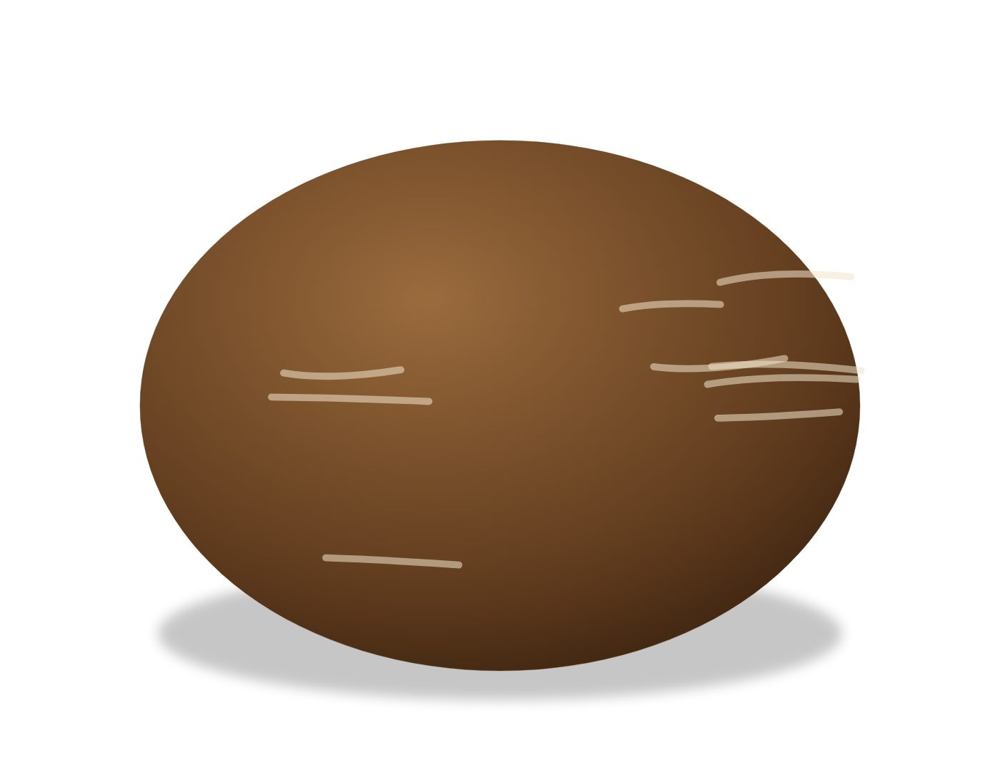
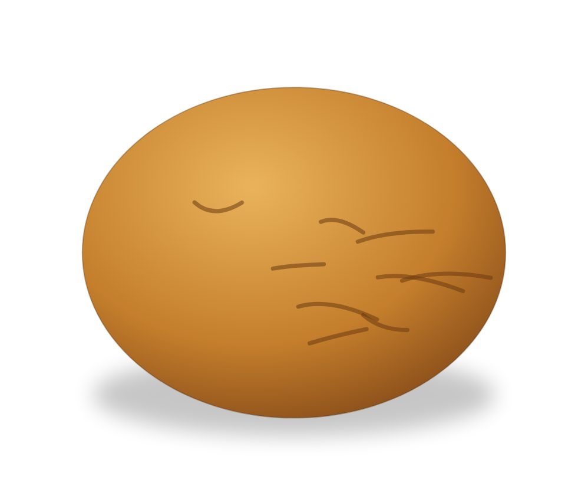
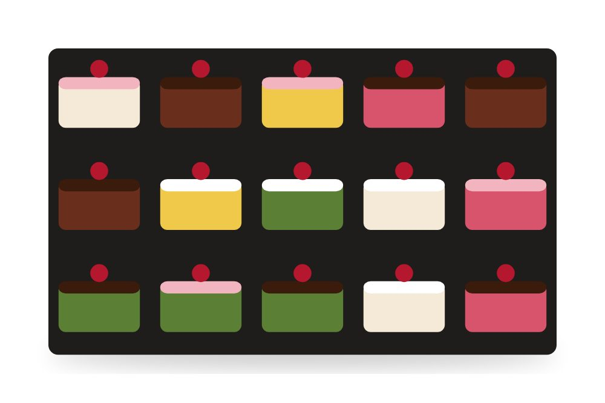
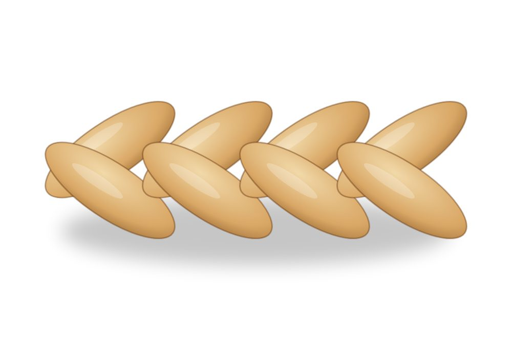
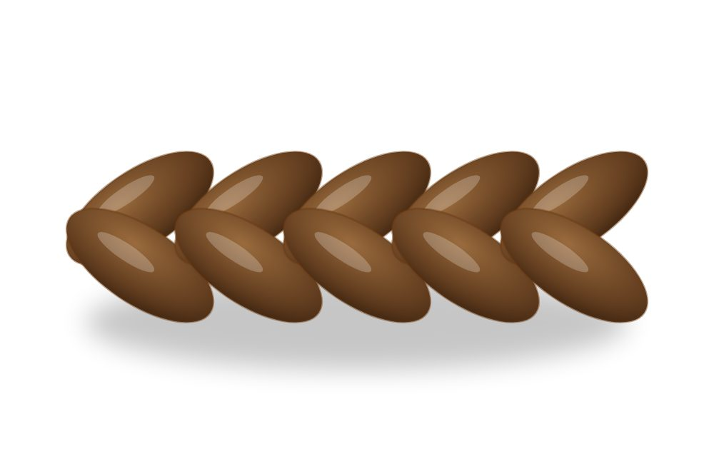
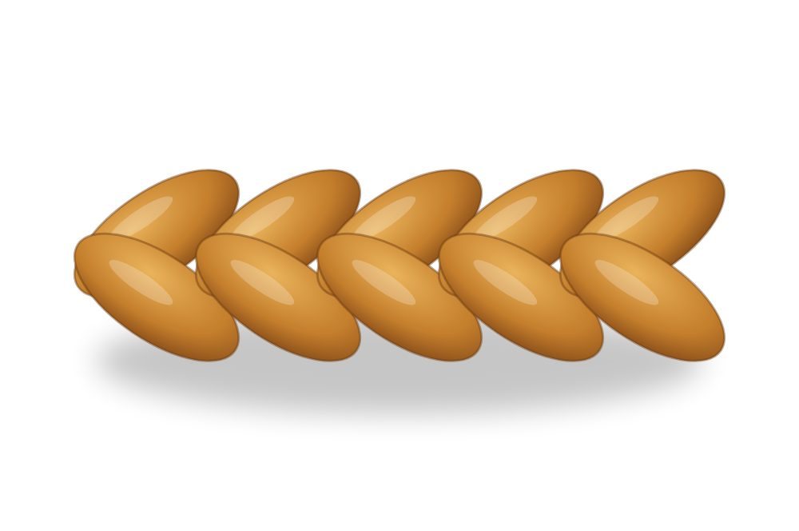

Drei Generationen Handwerk.
Begonnen hat alles 1936 in einem kleinen Geschäft. Heute führen Lea und Marc Kornblum die Bäckerei in dritter Generation – mit neun Filialen und dem Hauptsitz am Marktplatz.

Vom kleinen Laden zu neun Filialen.

1936Erste Generation
Rosa und Walter Kornblum eröffnen ihr Bäckereigeschäft in Kornwil.

1970Zweite Generation
Sohn Daniel Kornblum, frischgebackener Meister, übernimmt mit seiner Frau das Geschäft.

2001Neue Café-Bar
Im Frühling eröffnet der neue, grosszügige Laden mit Café-Bar und Garten – und der neue Ofen wird eingeweiht.

2002Dritte Generation
Lea und Marc Kornblum übernehmen und führen die Tradition mit ihrem Team weiter.

2016 – heuteNeue Filialen
Nach und nach kommen weitere Filialen in der Region dazu, heute sind es neun.

2023Neuer Hauptsitz
Der Firmensitz zieht an den Marktplatz – für mehr Platz für unser Team und um die Qualität langfristig zu sichern.
Und was sagen unsere Kunden?
Unser Sonntag beginnt mit diesem Zopf. Die Kruste, die Krume, alles stimmt.
Man merkt, dass hier noch von Hand gearbeitet wird. Das Brot hält sich tagelang.
Mit Abstand die feinsten Butterzöpfe, die ich kenne.
Das Sauerteigbrot ist das beste weit und breit.
Reizender kleiner Ort mit feinem Gebäck und exzellentem Brot.
Leichte, nicht zu süsse Vanillecreme mit grossen, saftigen Brombeeren.
Handwerk braucht Handwerker.
Als Handwerksbetrieb bilden wir Lernende zu gestandenen Fachkräften aus.
Interessieren Sie sich für eine Lehre als Bäcker:in-Konditor:in-Confiseur:in oder im Detailhandel? Melden Sie sich bei uns – wir freuen uns auf Ihre Bewerbung.
Bewerbung sendenLust auf einen frischen Zopf?
Torten, Zöpfe und Apéro-Platten bestellen Sie bequem per Telefon oder E-Mail – für Lieferungen am Folgetag bis spätestens 7.00 Uhr.